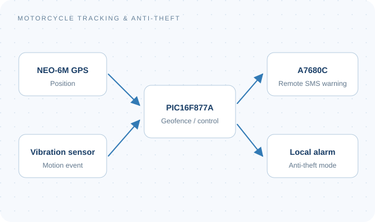

Wireless intelligence, computer vision, and connected embedded systems.
SYSTEM OVERVIEW
Wireless communicationsOngoing · 2026
CNN-Based Cooperative Spectrum Sensing for Cognitive Radio Networks
Team leader
Cooperative spectrum sensing that combines local energy detection at multiple secondary users with a fusion-center CNN to infer primary-user activity.
Approach & contributions +
Developing distributed sensing and learned fusion for cognitive radio networks.
Planned evaluation: detection probability, false-alarm probability, and sensing error versus SNR, user count, and sample size.
Benchmarking is planned against conventional sensing and fusion rules.
CNNCognitive radioEnergy detection
SYSTEM OVERVIEW
Computer vision & AI–IoT2026
Human-Following Robot with Fall Detection
Team leader
A real-time robot for person following and human-state monitoring, combining YOLO inference on Raspberry Pi with Arduino motor control and serial communication.
Approach & contributions +
Integrated person and posture detection with fall and person-loss detection.
Developed web monitoring and alerts, backend event handling, database storage, and user authentication.
Integrated device and safety-status dashboards.
YOLORaspberry PiArduinoWeb monitoring
SYSTEM OVERVIEW

Embedded systems2026
GPS/GSM-Based Motorcycle Tracking and Anti-Theft System
Individual project
A PIC16F877A prototype combining NEO-6M GPS, A7680C mobile communication, vibration sensing, and local alarm circuitry.
Approach & contributions +
Developed C control software and designed the PCB.
Practical tests verified position display, anti-theft mode activation, and warnings when leaving the predefined safe zone.
PIC16F877AEmbedded CGPS / GSMPCB
SYSTEM OVERVIEW
Computer vision2026
Computer-Vision-Based Offside Detection in Football Video
Team leader
An OpenCV video pipeline for player localisation and frame-level candidate offside-line estimation using YOLO, K-means team classification, and perspective geometry.
Approach & contributions +
Applied Canny edge detection, Hough transforms, and RANSAC vanishing-point estimation to identify pitch geometry.
Used Kalman filtering to stabilise spatial estimates.